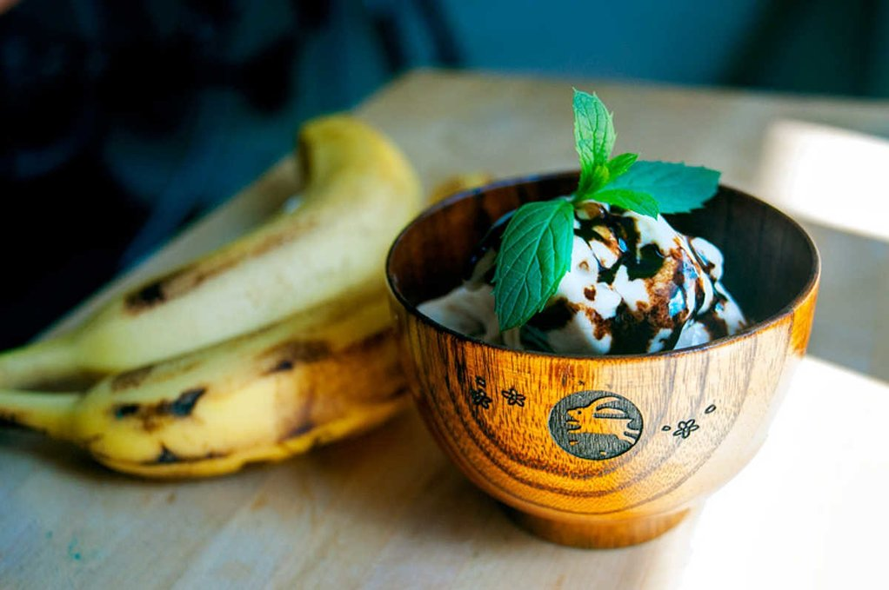

balsamic banana ice cream
2 servings — 120 minutes
Banana ice cream is a simple alternative to dairy or coconut based desserts. It's a no-fuss recipe that requires little preparation and waiting time.
Making it is easy, and only requires putting bananas in the freezer. While waiting for them to harden up, prepare your balsamic coulis. If you've ever boiled balsamic vinegar, you know that it can sting your eyes. Making a balsamic vinegar reduction makes it thick and syrupy, and works well as a topping. We like the contrast of the bananas and vinegar.
 balsamic vinegar250 ml
balsamic vinegar250 ml
balsamic reduction
- Put 240 ml (1 cup) of balsamic vinegar in a non-stick pan.
- Bring up to medium high heat, once it starts to boil, bring down to medium low and let simmer until the vinegar has been reduced by a little more than half. Stir it on occasion. Make sure you have an open window or the overhead fan running because boiling vinegar has a really strong smell!
- Transfer to a bowl and let cool completely, then store in the refrigerator. It will thicken when it gets cold. This recipe makes a lot of balsamic reduction, it's hard to make very little. It keeps in the refrigerator for a while so you can easily use it in other recipes. It's great when served over fruit.
 banana2
banana2 soy milk60 ml
soy milk60 ml vanilla extract1.25 ml
vanilla extract1.25 ml
banana ice cream
- Peel and cut 2 whole bananas into slices, lay slices flat onto a plate and put in the freezer for at least 2 hours.
- When properly frozen, put the banana slices in a blender — or food processor — with 60 ml (1/4 cup) of soy milk and 1/4 tsp of vanilla extract. Process until smooth.
- Serve in individual bowls, with 5 ml (1 tsp) or more of balsamic reduction.